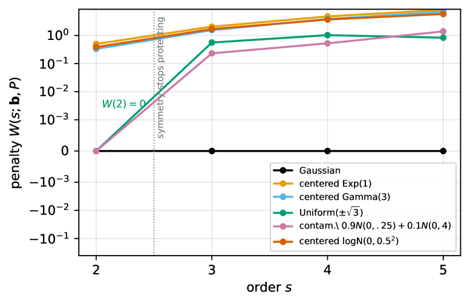

The core normal-system correspondence underlying the weighted-L2 projection penalty formula is machine-checked in Lean 4.
Abstract
Wiener-Hermite cross-correlation identification represents a polynomial response in the Hermite basis. Under Gaussian excitation the basis is orthogonal and a diagonal rule recovers it exactly; under non-Gaussian excitation the same basis is kept, but its Gram matrix gains off-diagonal terms and the diagonal rule is no longer the population projection. We give the exact finite-order excess $L^2(P)$ risk of this mismatch: a moment quadratic form from two Hankel-Cholesky factorizations and one diagonal solve, at $O(s^3)$ cost from moments to order $2s$. Closed cumulant forms at orders three and four expose which non-Gaussian features drive it; symmetry protects the Gaussian basis only through order two. A bootstrap decides, from data, whether a matched basis is worth building; on a Wiener-Hammerstein benchmark it separates a near-Gaussian channel (penalty $\approx 10^{-4}$) from a skewed output (penalty $0.05$). The computation is a weighted-$L^2$ projection whose core normal-system correspondence is machine-checked in Lean 4.
Problem
Wiener-Hermite cross-correlation identification uses a Gaussian Hermite basis with a diagonal rule, which is no longer the population projection under non-Gaussian excitation. The resulting excess L2 risk (mismatch penalty) needs exact quantification.
Approach
An exact finite-order excess L2(P) risk formula is derived as a moment quadratic form built from two Hankel-Cholesky factorizations and a diagonal solve, at O(s^3) cost. Closed cumulant forms at orders three and four identify the driving non-Gaussian features. The core normal-system correspondence of the weighted-L2 projection is machine-checked in Lean 4.
Results
The penalty formula is verified numerically to 2e-16 across six laws and orders s=2..5, and via three independent computation paths. On a Wiener-Hammerstein benchmark it separates a near-Gaussian channel (penalty 1e-4) from a skewed output (penalty 0.05).

Figure 1: Penalty W(s;\mathbf{b},P) for the canonical signal across six input laws (symlog scale). Symmetric kurtotic laws (uniform, contaminated normal) have W(2)=0 exactly and join at s=3 (Corollary 2.6 ); skewed laws pay from s=2 ; the Gaussian control stays at zero.